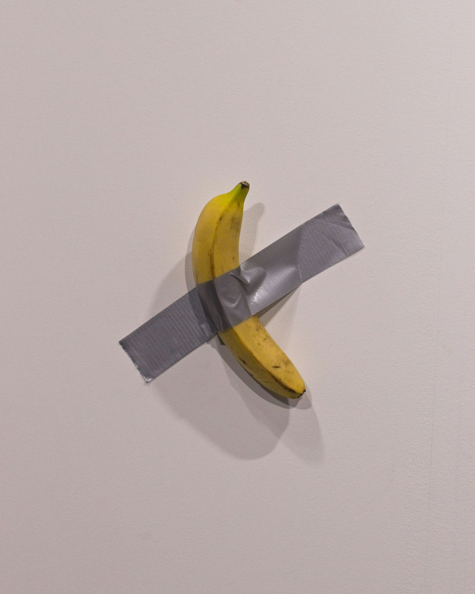

Maurizio Cattelan, a bold artist known for controversial and influential works, challenges contemporary cultural conventions.
Nato a Padova, Cattelan si è distinto per un approccio autodidatta alla vita artistica. Iniziando con un interesse per la radiotecnica, ha poi esplorato la scultura e l’arte performatica, rendendosi noto per le sue opere audaci e talvolta controverse. Non ha mai temuto il giudizio altrui, ponendosi sempre come il suo critico più severo.
LOVE (il dito medio): una scultura provocatoria situata a Milano, che ha stimolato dibattiti sull’arte pubblica e il suo impatto sociale.

La scultura "LOVE" rappresenta una mano con il dito medio alzato, un gesto talvolta associato al disprezzo o alla sfida. Posizionata in un luogo pubblico a Milano, ha attirato l'attenzione dei cittadini e dei visitatori, dividendo le opinioni sulla sua idoneità come opera d'arte pubblica. Alcuni la considerano una forma di espressione artistica audace e provocatoria che invita alla riflessione su temi sociali e politici, mentre altri la trovano offensiva o inappropriata per uno spazio condiviso da persone di diverse età e background.
Il dibattito generato da "LOVE (il dito medio)" ha messo in luce l'importanza dell'arte pubblica nel contesto urbano contemporaneo, sollevando domande su quale sia il ruolo dell'arte nello spazio pubblico e su chi debba decidere quali opere vengano esposte. In tal modo, questa scultura ha acquisito un significato più ampio, diventando non solo un'opera d'arte in sé, ma anche un catalizzatore per discorsi e riflessioni sull'interazione tra l'arte e la società.
Inoltre, l'impatto sociale di "LOVE (il dito medio)" si è esteso oltre il contesto locale, suscitando reazioni e discussioni anche a livello nazionale e internazionale. Questo fenomeno evidenzia come l'arte pubblica non sia confinata alle singole comunità, ma possa avere risonanza e conseguenze su scala globale, influenzando il modo in cui le persone percepiscono e interpretano il mondo che le circonda.
Cattelan si distingue anche nel campo della comunicazione e dei media. Il suo profilo Instagram, "The Single Post", e la rivista "Toilet Paper" sono esempi di come mescoli arte e pubblicità, creando contenuti che sfidano le convenzioni e invitano alla riflessione.

Se ti trovi a Milano o hai la possibilità di viaggiare, ti consiglio di non perdere le mostre di Cattelan, come quella al Pirelli Hangar Bicocca. Le sue esposizioni sono molto più di eventi social; sono esperienze immersive che toccano temi profondi dell'esistenza umana.
Parole Chiave
| Distinto | Diventare noto per qualcosa di particolare. |
| Autodidatta | Qualcuno che impara da solo, senza insegnanti. |
| Radiotecnica | Studio dei radio e delle tecnologie per trasmettere suoni e dati. |
| Scultura | Arte di creare figure o forme in materiali come pietra o metallo. |
| Arte performatica | Tipo di arte dove l'artista fa una performance davanti a persone. |
| Audaci | Cose fatte con coraggio e innovazione. |
| Controverse | Cose che molte persone non accettano o discutono molto. |
| Giudizio | Opinione o decisione su qualcosa o qualcuno. |
| Critico | Persona che giudica o esprime opinioni su cose come l'arte. |
| Provocatoria | Qualcosa fatta per provocare una reazione forte. |
| Dibattiti | Discussioni formali su un argomento specifico. |
| Impatto sociale | Effetto di una azione sulla società. |
| Opera d'arte | Creazione artistica come un quadro o una scultura. |
| Sfida | Azione di provare a fare qualcosa difficile. |
| Disprezzo | Sentimento di non rispetto verso qualcosa o qualcuno. |
| Espressione | Modo di mostrare i propri sentimenti o pensieri. |
| Audace | Essere coraggioso e pronto a prendere rischi. |
| Riflessione | Pensare attentamente su qualcosa. |
| Temi sociali | Argomenti riguardanti la società e le persone. |
| Politici | Relativi al governo o alla gestione di un paese. |
| Offensiva | Qualcosa che può far sentire male le persone. |
| Inappropriata | Non adatta per una situazione specifica. |
| Contesto urbano | Ambiente e situazione delle città. |
| Catalizzatore | Qualcosa che fa iniziare o cambiare le cose più velocemente. |
| Interazione | Azione di due o più cose che hanno effetto l'una sull'altra. |
| Esposizioni | Mostre di opere d'arte aperte al pubblico. |
| Immersive | Esperienze che coinvolgono completamente. |
| Esistenza | La vita o il fatto di esistere. |
Esercizio
https://wordwall.net/play/73090/566/688
Domande
- Chi è Maurizio Cattelan?
- Come ha imparato Maurizio Cattelan a fare arte?
- Qual è il nome di un'opera famosa di Cattelan che include una banana?
- Dove si trova la scultura "LOVE" e cosa simboleggia?
- Perché le opere di Cattelan causano discussioni?